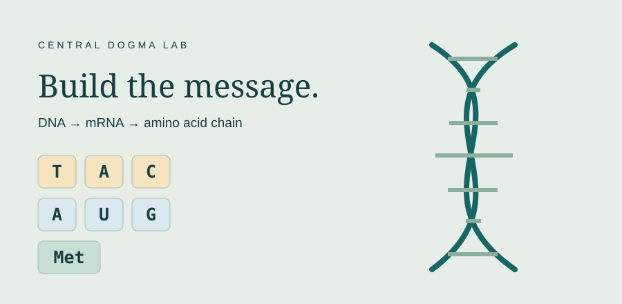
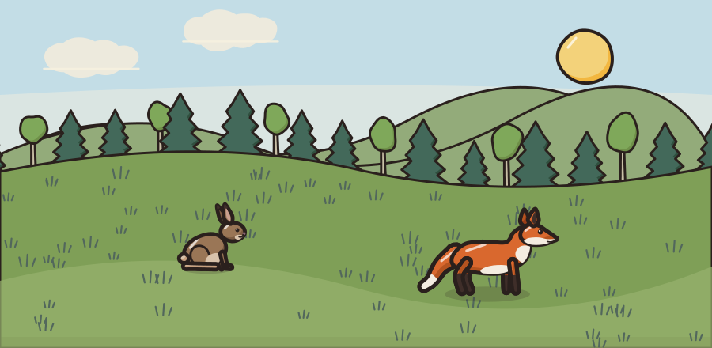
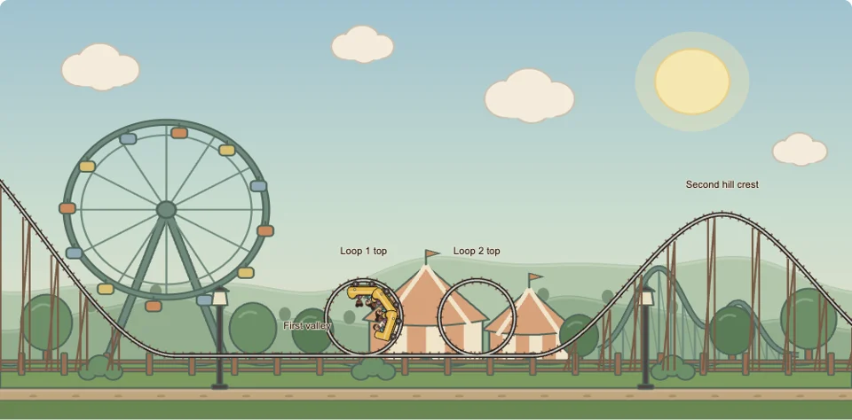
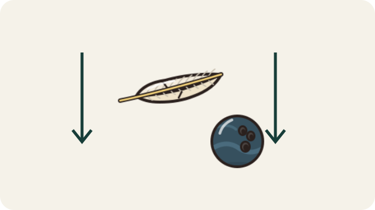

SCIESMIC LABS
Free science simulations
Run real experiments in the browser. Every lab is TEKS and NGSS aligned, works in English and Spanish, and needs no accounts or downloads.
- TEKS + NGSS
- English / Español
- Chromebook ready
- No sign-up
LIFE SCIENCE · GRADES 7–8
Marsh Beetles: Selection Lab
Change the marsh background and predation pressure, then watch inherited beetle patterns rise and fall over generations.
EARTH SCIENCE · GRADES 6–8
Plate Boundary Lab
Pull plates apart, push them together, slide them past each other or move them over a hot spot, then run time forward millions of years and watch ocean basins, earthquakes, mountains and volcanoes form.
PHYSICAL SCIENCE · GRADES 6–8
Net Force Cart Lab
Push, pull and launch carts on a track. Change net force, mass and friction, then measure acceleration on a velocity–time graph and test all three of Newton's laws.
LIFE SCIENCE · GRADES 6–8
Cell Operations Lab
Shut down one organelle at a time in a plant or animal cell, read six health gauges over a 24-hour day, then diagnose a mystery cell from its symptoms.
SPACE SCIENCE · GRADE 8+
Star Life Cycle Lab
Pick a star's starting mass and follow it across the H-R diagram from nebula to white dwarf, neutron star or black hole, then sort mystery stars by type.
PHYSICAL SCIENCE · GRADES 6–8
States of Matter Lab
Heat or cool water and dry ice, watch their particles, and find the flat parts of the heating curve where they change state. Then identify a mystery substance.

LIFE SCIENCE · GRADES 7–8 INTRODUCTION · BIOLOGY EXTENSION
Central Dogma Lab
Build complementary DNA and mRNA, decode an amino acid chain, then investigate one-base changes and mystery fragments.

LIFE SCIENCE · GRADES 7–8 APPLICATION
Predator Prey Lab
Compare camouflage, trace food-linked predator–prey cycles across seasons, and investigate carrying capacity on a shared population graph.

PHYSICAL SCIENCE · GRADES 6–8
Energy on the Rails
Build a powered lift, repeated hills, and loops. Add cars and riders, then collect kinetic, gravitational potential, and thermal energy data as the ride unfolds.

PHYSICAL SCIENCE · GRADES 6–8
Gravity Drop
Drop feathers, balls, and paper in air and vacuum. Compare fall times, inspect forces, and use evidence to explain gravity and air resistance.